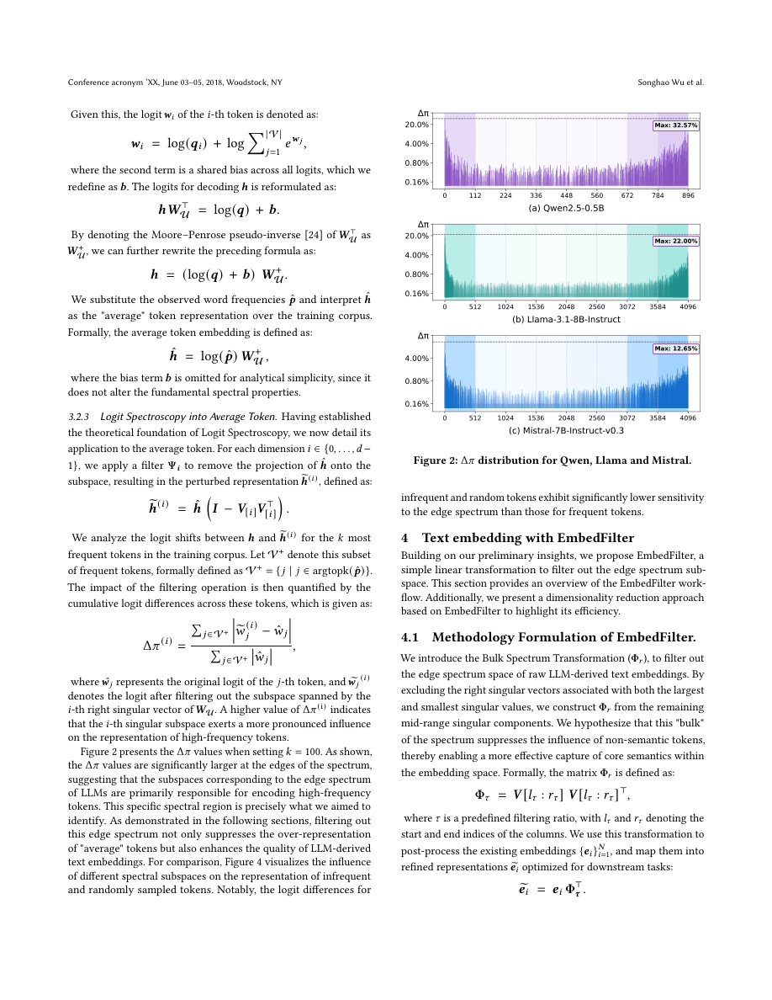

#1
★ 7/10
Your UnEmbedding Matrix is Secretly a Feature Lens for Text Embeddings
你的反嵌入矩阵其实是文本嵌入的特征透镜

图 Figure · Page 4 of paper
🎯 用简单线性变换过滤高频词噪声，提升大模型文本嵌入质量并压缩存储
A simple matrix filter removes noisy high-frequency token biases from LLM embeddings, boosting semantic quality and shrinking storage costs.
🗣️ 一句话比喻 · Plain-English Analogy想象你在图书馆里靠"气味"找书，但有人喷了太多无处不在的空气清新剂（就像"的""了""是"这类高频词），导致每本书闻起来都一样。EmbedFilter 就像打开窗户让这股通用气味散去——每本书独特的香气（真实语义）立刻就清晰可辨了。Imagine you're trying to find a specific book in a library by its "smell," but someone sprayed so much generic air freshener (like "the" and "a") that all the books smell the same. EmbedFilter is like opening the windows to let that generic smell out — suddenly, each book's unique scent (real meaning) comes through clearly.
| 维度 | 中文 | English |
|---|---|---|
| ❓ 待解决 的问题 |
大语言模型虽然擅长生成文字，但当我们要它把一段话压缩成一个代表其意义的"向量"（即文本嵌入）时，效果往往不理想。研究发现，这些向量被"的""了""是"之类的高频无意义词严重干扰，导致真正的语义被压制。这使得大模型在搜索、文档匹配等任务中表现欠佳。 | Large language models (LLMs) are great at generating text, but when you ask them to produce a single vector that "represents" a whole sentence or document — called a text embedding — they often do a poor job. It turns out their embeddings get polluted by very common, meaningless words like "the" or "a," which drown out the actual meaning. This makes LLM-based embeddings worse than expected for tasks like search, document matching, or question answering. |
| 💡 解决 的亮点 |
• 意外发现：大模型的文本嵌入中悄悄夹带了大量高频无意义词的"信号"，这是一个被长期忽视的根本缺陷。 • 溯源诊断：研究者将问题追溯到模型内部的"反嵌入矩阵"——它本是用来预测下一个词的，却暗中将噪声"写入"了嵌入向量。 • 优雅修复：EmbedFilter 仅用一个线性投影去除噪声子空间，无需重新训练，可直接插入任意大模型使用。 • 免费红利：过滤操作还自然实现了嵌入维度压缩，节省存储、加速检索，且质量不打折扣。 | • Surprising discovery: LLM text embeddings quietly over-represent high-frequency, meaningless tokens — an overlooked but fundamental flaw. • Novel diagnosis: The authors traced this problem directly to the model's own "unembedding matrix" — the part normally used to predict the next word — which encodes a hidden subspace that "writes" noise into embeddings. • Elegant fix: EmbedFilter is just a linear projection that strips out that noisy subspace — no retraining required, works on any LLM backbone out of the box. • Free bonus: Filtering also naturally compresses the embedding size, saving storage and speeding up search with zero quality loss. |
| 🧪 实验 内容 |
研究者在多个大模型（包括 Mistral-7B、LLaMA 系列等）上测试了 EmbedFilter，使用的是业界标准的 MTEB（大规模文本嵌入基准），涵盖检索、聚类、分类、语义相似度等共 56 项任务。对比对象包括：未经过滤的原始大模型嵌入、标准 PCA 降维方法，以及专门微调过的嵌入模型，测试了完整维度和压缩维度两种设置。 | The authors tested EmbedFilter on multiple LLM backbones (including Mistral-7B and LLaMA-series models) using the MTEB (Massive Text Embedding Benchmark) — the standard suite of 56 tasks covering retrieval, clustering, classification, semantic similarity, and more. They compared against vanilla LLM embeddings (no filtering), standard PCA-based dimensionality reduction, and competitive embedding-specific fine-tuned models, evaluating both full-dimension and compressed-dimension settings. |
| 📊 实验 结果 |
EmbedFilter 在所有测试的大模型上均稳定提升了零样本 MTEB 得分。以 Mistral-7B 为例，在检索和语义文本相似度任务上相比原始嵌入有显著提升。尤其值得注意的是：即使将嵌入维度压缩 75%（如从 4096 降至 1024），经 EmbedFilter 压缩的嵌入仍优于原始全维度未过滤的嵌入。与 PCA 压缩相比，在相同压缩维度下，EmbedFilter 保留了明显更好的语义质量，证明被过滤掉的维度确实是无信息的噪声。 | EmbedFilter consistently improves zero-shot MTEB scores across all tested LLM backbones. For example, on Mistral-7B, it achieves notable gains over vanilla embeddings on retrieval and semantic textual similarity tasks. Crucially, even when the embedding dimension is reduced by up to 75% (e.g., from 4096 to 1024), EmbedFilter-compressed embeddings still outperform the original full-dimension unfiltered embeddings. Compared to PCA-based compression, EmbedFilter retains significantly better semantic quality at the same reduced dimensionality, confirming that the filtered dimensions are truly uninformative rather than randomly removed. |
| 🏁 结论 | 本文证明了大模型嵌入中存在一个隐藏缺陷——高频无意义词被过度表达——其根源在于模型自身的反嵌入矩阵。通过一个简单的无需训练的线性过滤器（EmbedFilter），这一问题可以被可靠修复，同时获得更好的语义表示和更小、更快的嵌入索引，对所有使用大模型做文本搜索或匹配的系统具有即时实用价值。 | This paper proves that a hidden flaw in LLM embeddings — the over-expression of meaningless high-frequency tokens — can be traced to the model's own unembedding matrix, and that a simple, training-free linear filter (EmbedFilter) reliably fixes it. The result is both better semantic representations and smaller, faster embedding indices, offering an immediately practical improvement for any system using LLMs for text search or matching. |
| 🔗 论文 链接 |
arXiv: 2606.07502v1 · 📥 PDF | |
⚙️ Method · 方法详解
研究者首先发现：把文本嵌入投影回词汇表空间时，高亮的总是"的""是"等无意义高频词，而非文章的核心语义。随后他们分析了"反嵌入矩阵"，找到了专门负责编码这些高频词的特定子空间。EmbedFilter 的做法是：把文本嵌入投影到与这个"噪声子空间"正交的方向上，相当于减去高频词的影响方向。这是一个简单的线性操作，直接作用于大模型输出的嵌入向量，无需任何额外训练。由于过滤后的子空间维度更低，嵌入向量也可以用更少的维度存储，质量不受影响。
The authors first noticed that if you project a text embedding back onto the vocabulary space (using the model's own unembedding matrix), it tends to highlight common but meaningless words instead of the document's key ideas. They then analyzed the unembedding matrix and found a specific subspace responsible for encoding these high-frequency tokens. EmbedFilter works by projecting text embeddings into the space orthogonal to this "noisy" subspace — essentially subtracting the directions associated with uninformative tokens. This is a simple linear operation applied post-hoc to any LLM's output embeddings, requiring no additional training. Because the filtered subspace has lower rank, the resulting embeddings can also be stored in fewer dimensions without losing quality.
📐 Key Formulas · 关键公式
\[\tilde{E} = E \cdot (I - U_k^\top U_k)\]
💡 EmbedFilter 的核心公式：将原始文本嵌入 E 投影到与高频词子空间（由反嵌入矩阵的前 k 个奇异向量 U_k 张成）正交的方向，去除噪声分量，得到纯化后的嵌入 Ẽ。
The core EmbedFilter formula: it projects the original embedding E onto the subspace orthogonal to the top-k singular vectors (U_k) of the unembedding matrix — effectively subtracting the 'noisy high-frequency token' directions to produce a cleaner embedding Ẽ.
🌟 Why It Matters · 为什么重要
任何依赖 AI 搜索、文档检索或语义匹配的产品——从法律研究工具到推荐系统——都能直接受益于更好的文本嵌入。EmbedFilter 无需重新训练，即插即用，团队今天就能将其接入现有系统，同时获得更高精度和更低的云存储成本。
Any product that relies on AI-powered search, document retrieval, or semantic matching — from legal research tools to recommendation engines — benefits directly from better text embeddings. EmbedFilter is plug-and-play with no retraining needed, meaning teams can drop it into existing pipelines today and get both higher accuracy and lower cloud storage bills.